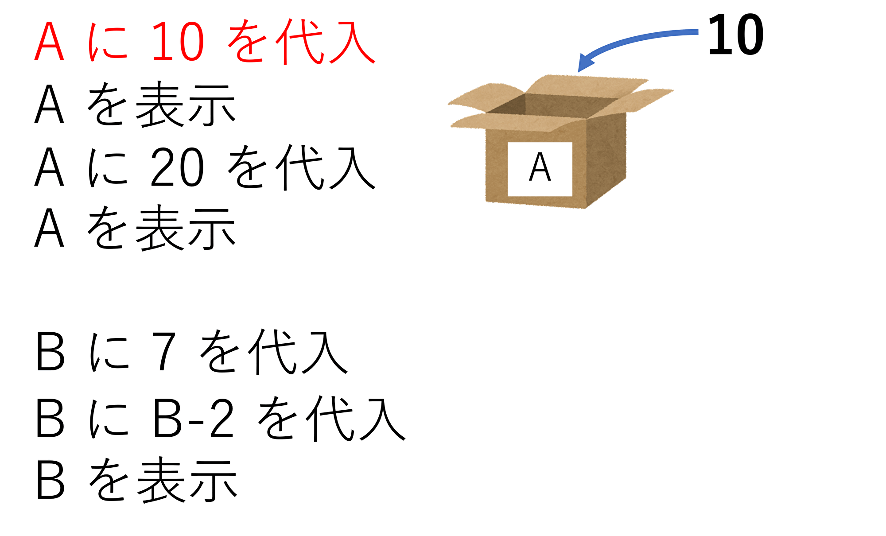

pythonのルール
（このページでの指示）
先ほどは、変数名を自分で決めて、数値や文字列の計算を行いました。
今度は変数を上書きしてみましょう。
プログラミングは
上に記述してあるものから順に処理をしていきます。
この特徴を用いると、変数を
上書きすることができます。
まずは、以下のように記述してみましょう。
A = 10
print(A)
A = 20
print(A)
B = 7
B = B - 2
print(B)
|
|

|
ここに注意!!
プログラミングでの = は左右が等しいという意味ではなく、左辺に右辺を代入するという意味です。
変数を途中で上書きしたことによって、出力結果が変わっています。
足し算だけでなく、その他の計算でも成り立ちます。